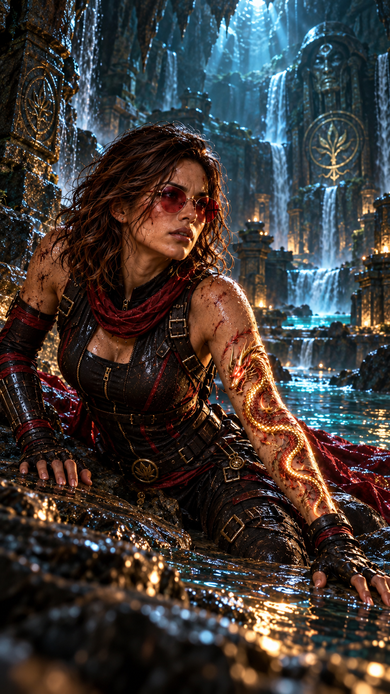
Hope ouvre les yeux.
Pendant quelques secondes, elle ne comprend pas où elle se trouve.
Son corps lui rappelle brutalement ce qui vient de se passer.
La chute.
L’eau.
Le choc.
Amy.
Une douleur sourde traverse son dos lorsqu’elle tente de bouger.
Elle serre les dents.
— J’ai connu de meilleurs réveils…
Hope reste encore quelques instants allongée sur le sable.
Puis elle parvient lentement à se redresser.
Tout autour d’elle, l’endroit est presque irréel.
Une vasque souterraine occupe une grande partie de la cavité.
L’eau, extrêmement sombre au centre, devient turquoise à proximité des rives.
Le sable sur lequel elle s’est échouée possède d’étranges reflets rouges, orangés, bleus et dorés.
Et il est chaud.
Pas brûlant.
Simplement tiède.
Comme si quelque chose, profondément sous la roche, réchauffait la terre.
Hope observe autour d’elle.
Très haut au-dessus de sa tête, une ouverture minuscule laisse pénétrer quelques rayons de lumière.
Bien trop haute pour qu’elle puisse l’atteindre.
Elle se lève difficilement.
Son corps proteste immédiatement.
— D’accord…
Elle pose une main contre ses côtes.
— Doucement.
Puis elle aperçoit quelque chose.
Sur la paroi située en face d’elle.
Des symboles.
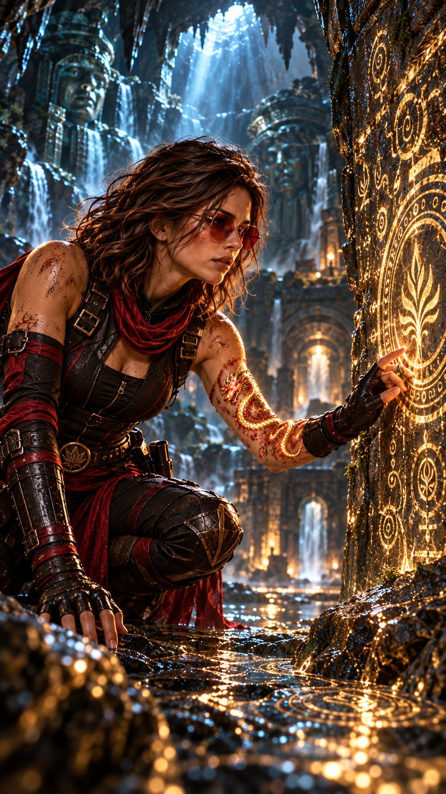
Hope s’approche.
Plus elle avance, plus elle réalise qu’ils ne peuvent pas être de simples formations naturelles.
Des lignes.
Des formes.
Des signes géométriques.
Certains lui semblent étrangement familiers.
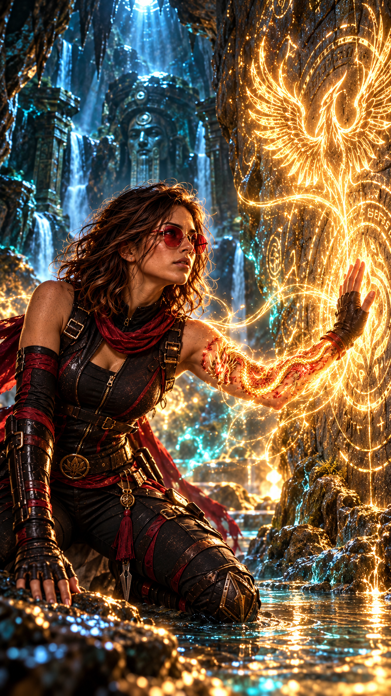
Hope tend doucement la main.
Au moment où ses doigts touchent la pierre, son avant-bras devient brûlant.
Hope retire immédiatement sa main.
Le dragon vient d’apparaître.
Ses contours brillent légèrement sous sa peau.
Presque simultanément, une chaleur se répand dans son dos.
Le phénix.
Hope reste immobile.
— Intéressant…
Elle touche de nouveau la paroi.
Le dragon réagit encore.
Le phénix également.
Cette grotte n’est probablement pas entièrement naturelle.
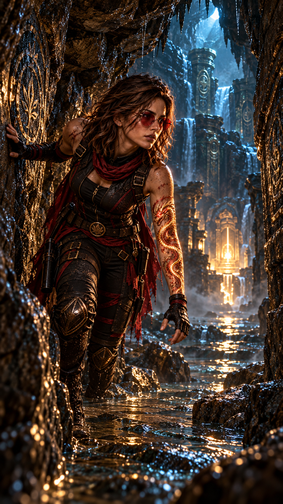
Sur sa droite, un passage étroit s’enfonce dans la roche.
Un tunnel.
Hope hésite à peine.
Puis s’y engage.
Le passage descend doucement.
Par endroits, elle doit se pencher.
À d’autres, les parois s’écartent suffisamment pour révéler de petites cavités.
Et partout…
les mêmes signes.
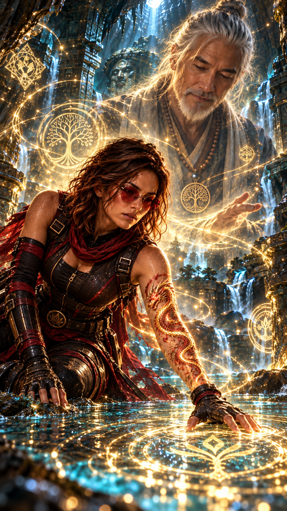
Hope les observe avec de plus en plus d’attention.
Certains ressemblent à ceux qu’elle a aperçus autrefois près de la Source de Vie.
Lors de ses épreuves.
À cette époque, Maître Lee lui avait interdit d’essayer de les déchiffrer.
Certaines réponses ne doivent être cherchées que lorsqu’on est prêt à entendre la question.
Hope avait détesté cette phrase.
Elle la comprenait un peu mieux aujourd’hui.
Elle poursuit son chemin.
— Qu’est-ce que tu es ?
— Et comment personne n’a jamais trouvé cet endroit ?
Elle s’arrête devant une nouvelle série de signes.
— Les Anciens ?
Aucune réponse.
Évidemment.
— Très utile.
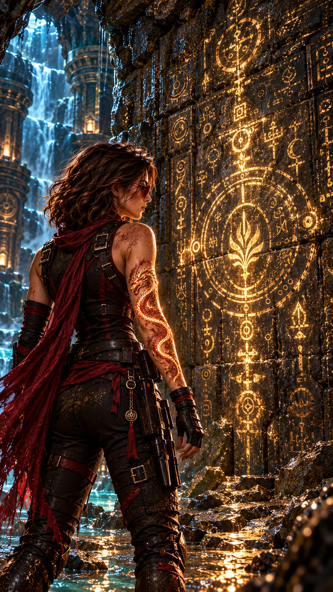
Après plusieurs minutes, le passage se termine brutalement.
Un cul-de-sac.
Hope soupire.
— Évidemment.
Elle pourrait faire demi-tour.
Elle ne le fait pas.
Quelque chose ne va pas.
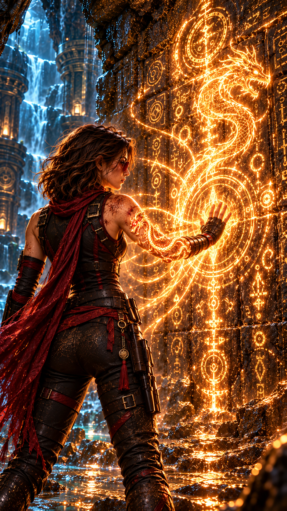
Hope touche un symbole.
Une partie du phénix chauffe immédiatement dans son dos.
Mais le dragon ne réagit pas.
Elle touche un deuxième symbole.
Rien.
Un troisième.
Cette fois, une partie du dragon devient brûlante.
Hope reste immobile.
Puis sourit.
— D’accord.
Ce n’est pas une écriture.
C’est un ordre.
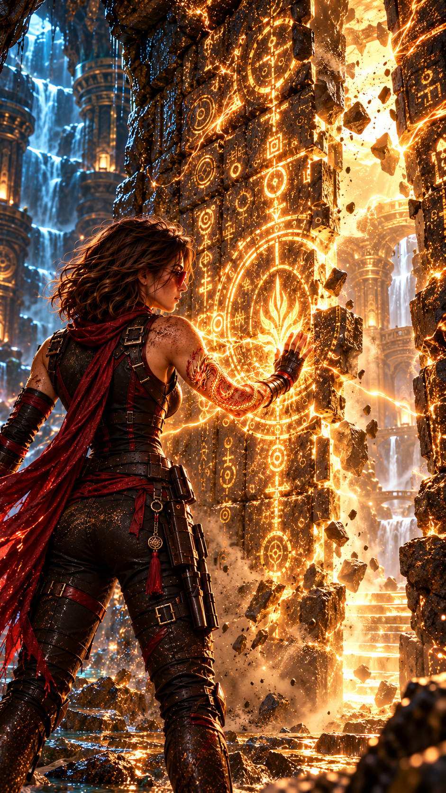
Lorsque le dernier symbole du dragon est activé, la paroi vibre légèrement.
Plusieurs signes s’enfoncent de quelques millimètres dans la roche.
Hope sourit.
— Première moitié.
Elle recommence avec le phénix.
Lorsqu’elle touche le dernier symbole, le phénix s’illumine totalement dans son dos.
Cette fois, un bruit sourd traverse la grotte.
La paroi devant Hope recule légèrement.
Puis pivote lentement.
Un passage apparaît.
Hope reste quelques secondes immobile.
— Donc…
Elle observe son dragon.
Puis son phénix.
— Vous êtes une clé.
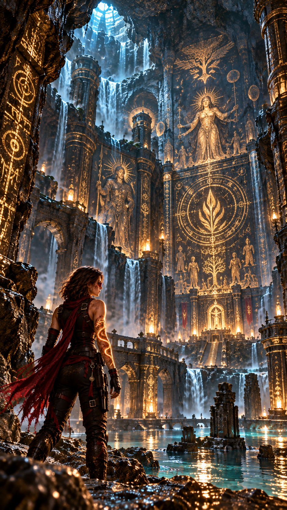
Hope franchit l’ouverture.
La pièce qui se trouve derrière est immense.
Hope s’arrête immédiatement.
— Mon Dieu…
Une cavité gigantesque s’étend devant elle.
De minuscules puits de lumière percent le plafond à des hauteurs vertigineuses.
Ils éclairent certaines parties des murs.
Et ces murs sont entièrement recouverts de fresques.
Des milliers de symboles.
Des dessins.
Des représentations.
Une histoire.
Hope avance lentement.
Elle ne comprend pas comment…
mais elle comprend.
Pas les mots.
Pas exactement.
Plutôt leur sens.
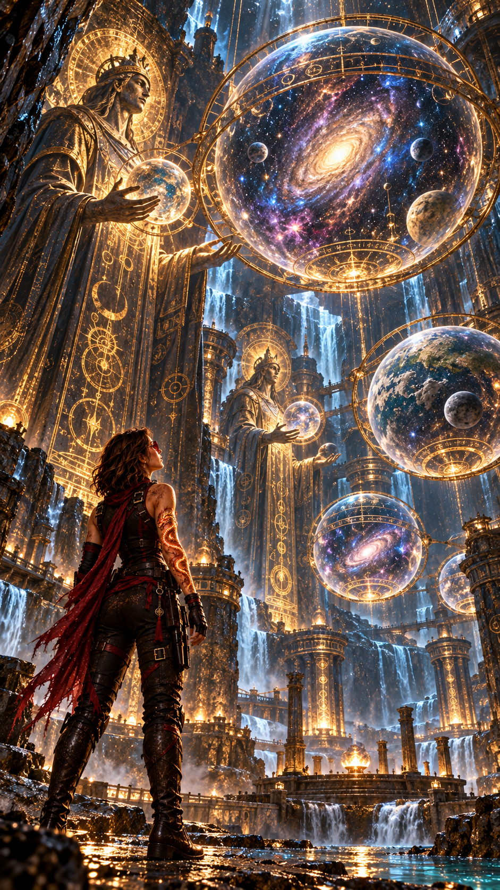
Une première fresque représente plusieurs êtres immenses.
Du moins, c’est ainsi qu’Hope les interprète.
Autour d’eux se trouvent d’étranges sphères.
À l’intérieur de certaines sphères :
des étoiles.
Des planètes.
Des formes ressemblant à des galaxies.
Hope s’approche.
— Des mondes…
Les êtres semblent réunis autour d’une immense structure.
Un plateau ?
Une carte ?
Une représentation symbolique ?
Hope n’en sait rien.
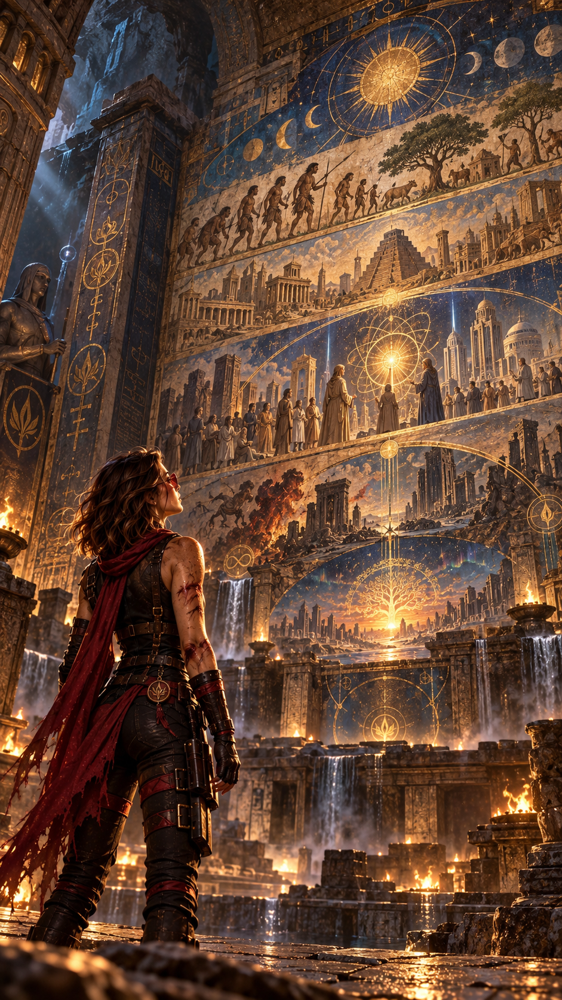
Une autre fresque montre une civilisation primitive.
Puis une étincelle.
Le feu.
Plus loin :
des outils.
Des roues.
Des systèmes d’écriture.
Des machines.
Hope continue.
Elle voit des silhouettes humaines regarder le ciel.
Puis d’autres manipuler des objets de plus en plus complexes.
Enfin :
des circuits.
Des réseaux.
Des formes rappelant étrangement des intelligences artificielles.
Hope recule légèrement.
— Non…
Est-ce réellement ce que cela représente ?
Ou son esprit cherche-t-il simplement à donner un sens moderne à quelque chose de beaucoup plus ancien ?
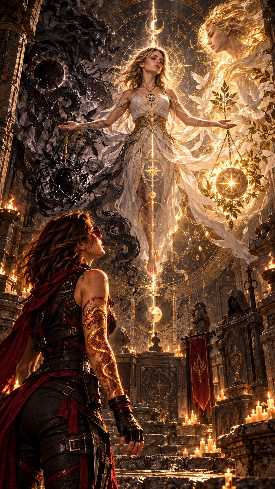
Une autre scène attire son attention.
Une immense sphère semble secouée.
À l’intérieur, des montagnes se fissurent.
La mer bouge.
Le sol se déforme.
Hope fronce les sourcils.
Puis remarque autre chose.
Les montagnes étaient déjà fissurées.
La sphère n’a pas créé la catastrophe.
Elle semble seulement avoir déclenché quelque chose qui existait déjà.
— Une impulsion…
Elle pense à l’effet papillon.
Une tension déjà présente.
Une perturbation minuscule.
Puis l’événement.
Plus loin encore, les sphères commencent à se différencier.
Dans l’une, une civilisation apparaît plus tôt.
Dans une autre, plus tard.
Dans une troisième, un conflit dévaste une région entière.
Ailleurs, une découverte change tout.
Hope reste fascinée.
— Des possibilités…
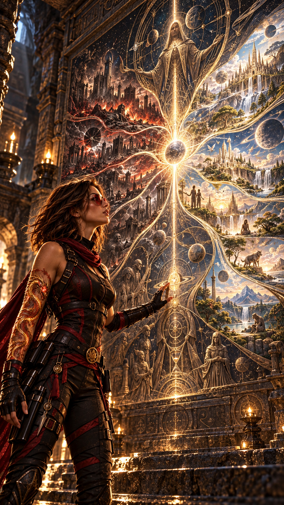
Puis Hope s’arrête.
Sur une paroi isolée se trouve une représentation différente.
Un être immense tient dans sa main une petite fiole.
À l’intérieur :
une seule goutte rouge.
Du sang.
Autour de la fiole, plusieurs symboles.
Hope les comprend presque instantanément.
Pas mot pour mot.
Mais suffisamment.
Un fragment de nous.
Conservé dans chaque monde.
Jusqu’au jour où ceux qui y vivent seront capables de le comprendre.
La fresque suivante représente des êtres primitifs.
Puis, beaucoup plus tard, une silhouette humaine devant la fiole.
Une autre silhouette apparaît ensuite.
Différente.
Proche des humains.
Mais pas complètement identique.
Hope lit lentement le sens des symboles.
— Lorsque notre sang rencontrera le leur…
Elle s’arrête.
Puis reprend.
… l’Équilibre pourra renaître parmi eux.
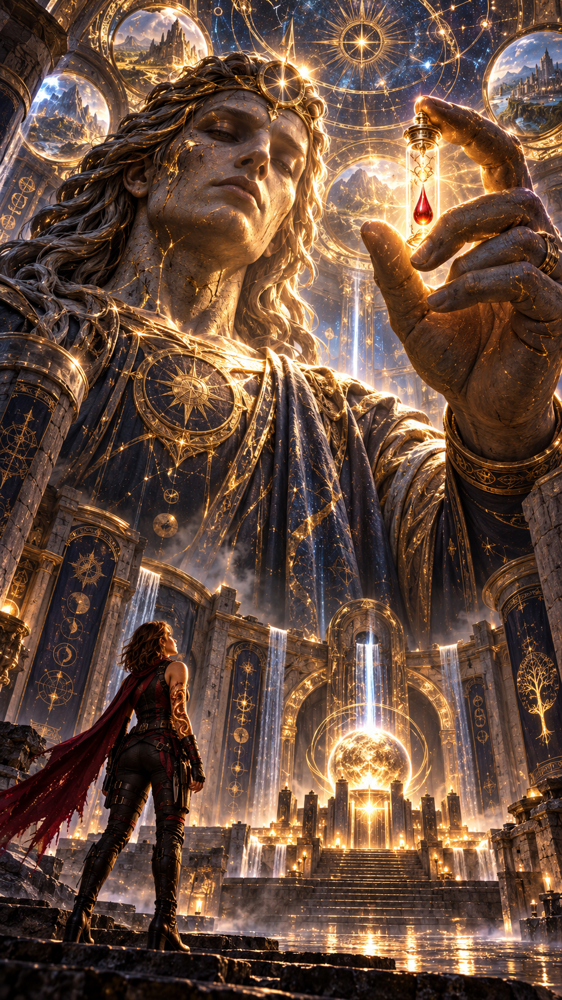
Hope observe la fresque suivante.
L’être issu de cette union ne domine pas les autres.
Il ne règne pas.
Il se tient entre deux groupes.
Deux forces.
Deux directions.
L’une claire.
L’autre sombre.
Les deux forces entourent le personnage.
Mais celui-ci ne semble appartenir entièrement à aucune.
Il maintient quelque chose entre elles.
Un équilibre.
Hope pense immédiatement aux Sentinelles.
Aux Gardiens Noirs.
Puis elle rejette cette conclusion.
— Trop simple.
Peut-être que les deux forces représentées ici existent depuis bien plus longtemps que leurs ordres.
Peut-être que les Sentinelles et les Gardiens n’en sont que des héritiers.
Ou une interprétation humaine.
Elle n’en sait rien.
Hope se laisse finalement glisser contre la paroi.
Elle s’assoit sur le sol.
Son esprit tourne beaucoup trop vite.
Une fiole.
Du sang.
Root.
Betty.
Anna.
Hope ferme les yeux.
Root lui avait raconté avoir confié la fiole à Betty.
Betty l’avait étudiée.
Anna avait dix-neuf ans.
Hope ouvre brutalement les yeux.
Dix-neuf ans.
Elle refait mentalement les dates.
Une fois.
Puis une deuxième.
Son rythme cardiaque accélère.
— Betty…
Elle se relève malgré la douleur.
Non.
C’est impossible.
Ou plutôt…
cela devrait être impossible.
Mais depuis quelque temps, ce mot avait perdu beaucoup de sa valeur.
Hope repense à Anna.
Sa vitesse d’apprentissage.
Ses perceptions.
Son intuition.
Cette sensation étrange dès leur première rencontre.
La manière dont Hale la protège depuis sa naissance.
Les paroles de Maître Lee.
La réaction des Gardiens Noirs.
Tout.
Beaucoup trop de choses commencent soudain à s’emboîter.
Hope revient devant la fresque.
Elle pose doucement sa main sur les derniers symboles.
Le dragon et le phénix réagissent simultanément.
Une dernière phrase semble se former dans son esprit.
Lorsque notre sang rencontrera le leur, l’Équilibre pourra renaître parmi eux.
Hope reste parfaitement immobile.
Puis murmure :
— Anna…
Le silence de la grotte lui répond.
Et pour la première fois depuis qu’elle connaît la jeune femme, Hope commence à comprendre que la question n’est peut-être pas de savoir ce qu’Anna peut devenir.
Mais plutôt…
ce qu’elle est déjà.